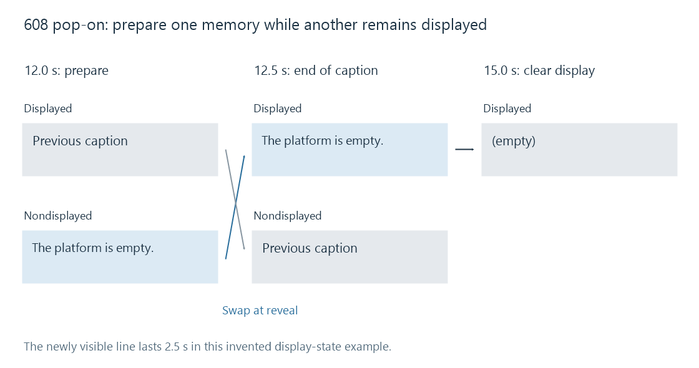

CEA-608 / CTA-608 captions
CTA-608 describes legacy line-21 caption data with channel selection, character/control codes and a cell-based presentation model that can also be carried digitally.
CTA-608, also encountered as CEA-608 or EIA-608, defines the line-21 data model associated with legacy NTSC captions. Its caption character and control data can also be carried in a digital video system.
The display model is cell-based, with 15 rows and 32 columns. Characters, cursor placement, style controls and display commands establish the visible presentation. It is not an SRT list transported one sentence at a time.
Caption channels and byte interpretation
The two field relationships provide caption channels:
| Field association | Caption channels |
|---|---|
| Field 1 | CC1 and CC2 |
| Field 2 | CC3 and CC4 |
Channel context comes from the caption coding, not simply from counting the first four video tracks. The broader line-21 system also carries other services; not every recognized data pair is visible caption wording.
A transmitted caption byte contains seven data bits and an odd-parity bit. For an illustrative character pair, ASCII H and i have data values 0x48 and 0x69. Their parity-bearing values can be 0xC8 and 0xE9, each with an odd number of one bits.
The decoder interprets the relevant code sets and controls. Removing parity and treating every byte as ordinary Unicode text would confuse character, control and service information.
Pop-on uses two presentation memories
In pop-on mode, a caption is prepared in nondisplayed memory while another presentation remains visible. An end-of-caption operation changes which prepared memory is displayed.

Imagine these conceptual operations, not a complete encoded packet:
- The visible memory contains the previous caption.
- Nondisplayed memory receives “The platform is empty.”
- At programme time 12.5 seconds, the prepared caption becomes displayed.
- At 15 seconds, a display-clearing operation removes it.
The new sentence's visible interval is 12.5–15 seconds. Its characters can have been transmitted earlier so that the whole caption is ready when it appears.
This is why an extractor must interpret display commands rather than use each data arrival as the beginning of the final text cue. Repeated control transmissions and decoder state also matter when processing the byte sequence.
Other modes update the display differently
| Mode | Presentation behavior |
|---|---|
| Pop-on | Prepare off screen, then reveal the completed caption |
| Paint-on | Add content to displayed memory as it arrives |
| Roll-up | Update a limited group of displayed rows and roll older rows upward |
For an invented two-row roll-up display containing lines A and B, adding C leaves B and C visible. It does not present A, B and C forever as three independent overlapping cues.
Converting a roll-up display to conventional timed text requires a decision about which changed presentation constitutes the next cue. A character-by-character transcript and a readable sentence-level caption are different extraction products.
608 data can remain 608 inside digital carriage
A digital caption transport can carry compatibility data preserving the 608 model as well as native 708 service data. Its presence in a digital packet does not rewrite the caption commands into 708 window commands.
For an Emby recording, identify the caption channel/service actually recovered. A source's “closed captions” indication cannot establish whether it contains 608 compatibility data, native 708 content or another presentation system.